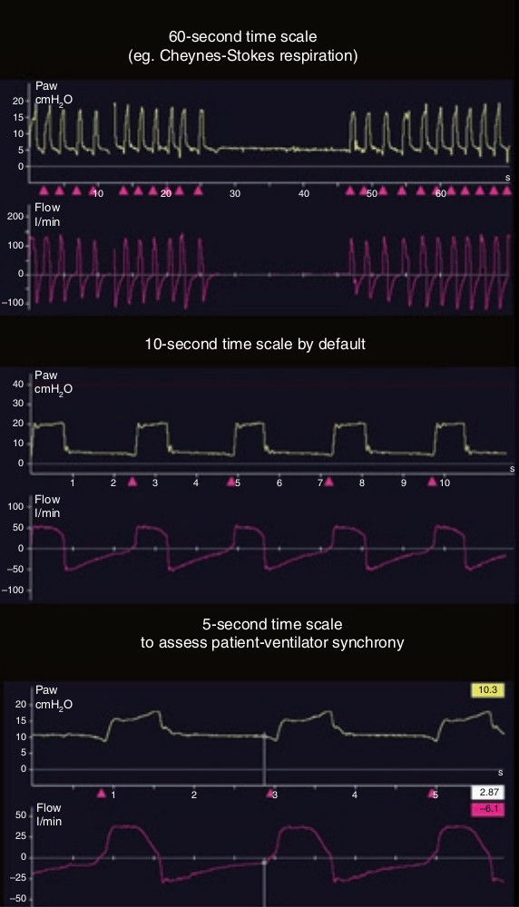

مقیاس زمان صفحه نمایش مانیتور بصورت پیشفرض ۱۰ ثانیه برای تمام طول محور افقی (زمان) در صفحه میباشد که طی این مدت سه الی چهار تنفس روی میدهد. گاهی برای مشاهده بهتره رویدادهای تکرار شونده مانند آپنه انسدادی و یا تنفس شین استوکس بهتر است به ۳۰ ثانیه یا بیشتر افزایش دهیم و یا برای بررسی دقیقتر هماهنگی (سنکرونی) بیمار و ونتیلاتور بزرگنمائی محور زمان را افزایش داد. برای مشاهده و آنالیز بهتر یک رویداد منفرد میتوان صفحه نمایش را بی حرکت (فریز) کرد. بکمک مکان نما (کرسر) میتوان مقدار فشار یا شدت جریان را در هر نقطه از زمان بدست آورد و هماهنگی بین فشار و شدت جریان را بررسی نمود.

مقیاس زمان
۱ – اهمیتی ندارد
۲ – برای فشار، حجم و شدت جریان متفاوت است
۳ – در صورت لزوم میتوان آن را تغییر داد
۴ – بستگی به تعداد تنفس دارد
۵ – بستگی به مد ونتیلاتور دارد